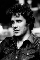

Also known as:Paura nella città dei morti viventi (original title)
Country:Italy, 93 minutes
Spoken languages:
Genres:Horror
Director(s):Lucio Fulci
Writer(s):Lucio Fulci, Dardano Sacchetti
Video Codec:Unknown
Number: 2070


Certification:R
Storyline:
A psychic participates in a séance where she sees a vision of a Dunwich priest hanging himself in a church cemetery, causing her to die of fright. New York City reporter Peter Bell investigates the séance and learns that the priest's suicide has somehow opened a portal to Hell and must be sealed by All Saints Day, or else the dead will overtake humanity.
Cast: 

Medium: Ultra HD Bluray,
Loaned: No
Aspect ratio: Unknown